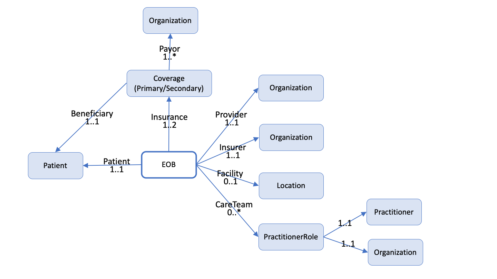

CARIN Consumer Directed Payer Data Exchange
0.1.0 - STU1
CARIN Consumer Directed Payer Data Exchange
0.1.0 - STU1
CARIN Consumer Directed Payer Data Exchange - Local Development build (v0.1.0). See the Directory of published versions
The CARIN Alliance Health Plan Workgroup was organized to develop a FHIR-based API that could be sent to a consumer-facing application.
The CARIN Blue Button Framework was designed to answer the challenge for health plans to ‘meet or exceed’ the CMS Blue Button 2.0 capabilities. The CMS Blue Button 2.0 project provides over 53 million Medicare fee-for-service beneficiaries access to their electronic claims information.
The goal of the CARIN Alliance Health Plan Workgroup is to develop an agreed upon set of data fields to exchange with consumers and a FHIR-based implementation guide for health plans to use to implement the API.
@Amol / Ryan – recommend removing reference to the Argonaut Project as it was not balloted by FM and it speaks to provider data, not payer data. The >Argonaut Project was formed in December 2014 as an implementation community comprising leading technology vendors and provider organizations to accelerate the use of FHIR and OAuth in health care information exchange. The Argonaut project is private-sector initiated and funded and works collaboratively with other FHIR initiatives to create open industry Implementation Guides in high priority use cases of importance to patients, providers and the industry as a whole.
Consumer-directed exchange occurs when a consumer or an individual authorized by a Payer to access another person’s information, invokes their HIPAA Individual Right of Access (45 CFR 164.524) and requests their digital health information from a HIPAA covered entity (CE) via an application or other third-party data steward.
Although the following is out of scope for this Implementation Guide, it is provided as background.
Data from health plans is not currently available to a consumer through an open API framework and therefore is not accessible by third party applications authorized by the consumer.
The Centers for Medicare & Medicaid Services (CMS) released March 9, 2020 and finalized May 1, 2020 On May 1st, 2020, its Interoperability and Patient Access Final Rule on patient access to health data. Under the final rule, Medicare Advantage (MA) plans, state Medicaid and Children’s Health Insurance Program (CHIP) agencies, Medicaid and CHIP managed care plans, and qualified health plan (QHP) issuers in the federally-facilitated exchanges (FFEs) must meet certain requirements regarding patient access to their health care information, including requirements related to application programming interfaces (APIs).
The proposed rule includes four types of information for dissemination:
The CARIN Alliance defined the Consumer Directed Payer Data Exchange (CARIN BB) Implementation Guide to meet CMS requirements to provide adjudicated claims and encounter data. Provisioning provider directory data and clinical data are defined by the DaVinci Payer Network (PDex Plan Net) and Payer Data Exchange (PDex) Implementation Guides.
The implementation date is January 1, 2021.
Payers must educate patients about sharing their health information with third parties
The implementation date is January 1, 2021. Patient education is out of scope for this Implementation Guide.
CARIN BB uses the ExplanationOfBenefit Resource as its primary resource. Reference Resources are Coverage, Patient, Practitioner, PractitionerRole, Organization and Location.
Since the ExplanationOfBenefit and Coverage profiles are not included in the US Core, there is no alignment requirement for these profiles. Patient, Practitioner, PractitionerRole, Organization and Location are US Core Profiles. Since these are supporting / reference profiles (rather than a focus profile) in CARIN BB, the alignment with the US Core is on the content of these profiles, but not on the search parameters.
The following diagram provides a high-level view of the relationships between resources used in this IG. It does not necessarily reflect all of the relationships/references between resources. 
The Consumer-Directed Payer Data Exchange IG requires the use of the SMART App Launch Framework’s standalone launch sequence. Data holders SHALL support the use of the launch/Patient scope. The use of the launch/Patient scope will make it clear to an application the patient context that must be used for the duration of the connection. The authorization sequence supports the ability for data holders to provide a patient selection widget that can be used to enable delegated access to member information. Details about the SMART App Launch Framework and standalone launch sequence can be found here.
The SMART App IG provides guidance on how to configure OAuth 2.0 servers to mediate access based on a set of rules configured to enforce institutional policy, which may include requesting end-user authorization. The SMART App IG does not dictate the institutional policies that are implemented in the authorization server. Security mechanisms, such as those mandated by HIPAA in the US (end-user authentication, session time-out, security auditing, and accounting of disclosures) are outside the scope of this profile.
The SMART App IG also provides guidance on how to handle authentication. If the app needs to authenticate the identity of the end-user, it should include two OpenID Connect scopes: openid and fhirUser. When these scopes are requested, and the request is granted, the app will receive an id_token along with the access token. For details, see the description here.
Using the RTPBC (Real Time Pharmacy Benefit Check), a patient can learn the cost and insurance coverage related to medications they’ve been prescribed. A person would typically use the RTPBC prior to the dispensing of the prescription and the filing of the claim. CARIIN BB provides the capability to access how pharmacy (and medical) benefits have been applied by the payer as a result of a claim filed by the pharmacy.
IG © 2020+ HL7 Financial Management Working Group. Package hl7.fhir.us.carin-bb#0.1.0 based on FHIR 4.0.1. Generated 2020-06-17
Links: Table of Contents |
QA Report
| Version History  |
|
 |
Propose a change
|
Propose a change